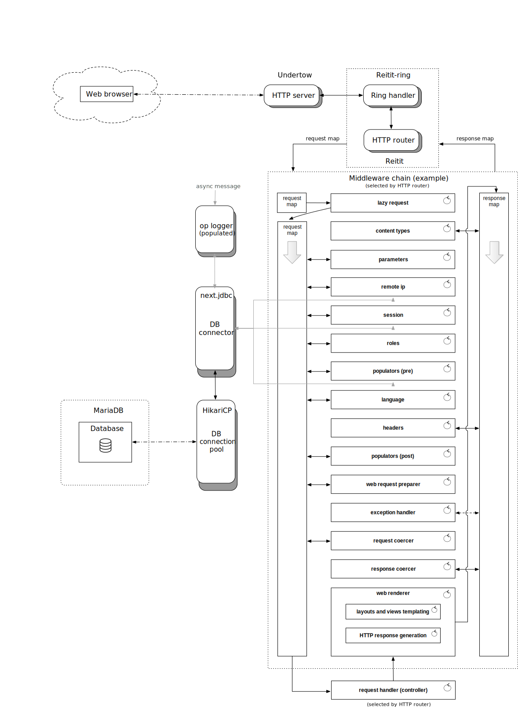

Introduction
Opinionated Clojure Web Engine.
Welcome to Amelinium, yet another set of libraries and helper functions to serve a dynamic web content. It is quite opinionated since its primary purpose is to be the web and API engine for a bunch of projects run by random:seed, the author and associates.
Important features
-
Configurable with EDN files loaded from specified directories.
-
JSP model-2 architecture with models, controllers, views and layouts.
-
System management functions, including inspection of current state, starting/stopping and suspending.
-
Database connection pooling and migrations.
-
Abstract caches around certain database operations (including incremental updates of collections) and time consuming functions, with adjustable TTL and queue size parameters.
-
Internationalization (i18n) based on maps with or without missing key messages and pluralization rules for translations of countable items.
-
Session handling with configurable accessors, secure tokens and prolongation support.
-
Cookie-less session handling.
-
Role-based access control middleware with optional context detection.
-
HTTP headers manipulation middleware.
-
Language detection middleware with configurable detection chains.
-
Generic populating functions to enrich request map with dynamic data.
-
Remote IP middleware with proxy detection and proxy IP whitelisting.
-
Lazy maps to pass request data between middleware handlers and contextual data to template rendering functions.
-
URI builders for localized paths with automatic detection and/or injection of language parameter (route-name based or path based).
-
URI builders for other parameterized paths.
-
Parameter coercion and error handling for both API and web channels.
-
Built-in coercion and validation schemas for common data types, including e-mail addresses, phone numbers, IP addresses (IPv4, IPv6, mapped IPv4 and mixed), passwords, natural person names, instant values, duration, session IDs and MD5 strings.
-
Built-in dynamic schemas for configurable data sets, including supported languages and account types.
-
Twilio API client (for SMS and e-mail messaging, including internationalized templates).
-
API response building macros and functions (including standardized translatable statuses, sub-statuses, language parameters and errors).
-
Web rendering handlers and predefined template tags for translations, language-parameterized path generation, session links (for cookie-less sessions), form building and session data access.
-
API and web response handlers (controlled by
:response/statusor:response/fn,:response/headersand:response/bodyrequest map entries). -
Flexible authentication engine with pluggable encryption modules and ability to build parameterized password encryption chains stored in a database (and re-used where possible).
-
Authentication functions for API and web, ready to be used in controllers.
-
Identity management functions for e-mails and phone numbers (with confirmation via a link or code).
-
Buffered events logging to a database with async channels.
-
Swagger support for API and web.
Simplified request processing workflow
Below is the simplified request processing workflow for a web channel. It may shed some light on the overall architecture, especially when someone is new to Clojure way of handling HTTP with Ring abstraction.

The HTTP server handles incoming connections with TCP sockets and negotiates connection parameters. When the bi-directional stream is ready the control is passed to a specified handler function in Clojure, which in this case is Reitit’s Ring handler configured to use Reitit HTTP router.
As we can imagine, HTTP router is responsible for matching resource paths from URL strings requested by clients and associating them with configured controllers and middleware chains.
Middleware chains are sequences of functions composed into a single execution chain to process request and/or response data. Controllers in Amelinium are handlers responsible for generating content after performing business-logic operations which may involve interacting with a database (via models) or connecting to other services.
Initial context created by the Ring handler is a map populated with basic information, like parameters received from a client, remote IP address, requested path and so on. This request map is then passed as an argument to the first function of a middleware chain, and finally to a controller assigned in configuration to a specific HTTP path (route).
Each middleware wrapper and controller can alter the request map. The last middleware (called web renderer on the diagram) is responsible for generating a response map on a basis of data found under some special keys in the request map. The entries identified by these keys should be set by the invoked controller (or, in rare cases by some middleware wrapper which may short-circuit the call chain and generate response).
Note that in other middleware setups you will most likely find the route handlers being functions which used to process a request map and return a response map. The difference here (in Amelinium) is that controllers are suppose to add some keys (like :response/status and :response/body) to the received map and the response generation is handled later by the generic renderers (separate for web and API channels). Of course, if any controller will generate a response map, it will be honored and the rendering layer will be skipped. Same with any middleware request wrapper.
When response map is returned it starts to “travel” through all middleware functions in chain to be processed before returning to a Ring handler. The difference between middleware function which transforms a request map from the middleware function which transforms a response map is only in the place where the processing is done. Request-related wrappers will operate on a request argument before other middleware wrappers are to be called, and response-related wrappers will operate on a result of calling all other wrappers. This is possible because Ring architecture is based on higher-order functions wrapping the actual logic.
Below is an example of a middleware wrapper which alters a request map by adding :REQ key to it, and does the same thing with a response map by adding a :RESP key to it. Note the (handler request) call which will call all other wrappers in a chain.
(fn [handler]
(fn [request]
(let [request (assoc request :REQ true) ;; request processing
response (handler request) ;; calling other handlers
response (assoc response :RESP true)] ;; response processing
response)))
Some middleware wrappers will never care about doing something with the response, therefore being much simpler:
(fn [handler]
(fn [request]
(handler (assoc request :REQ true))))
Controllers and middleware wrappers sometimes need access to data other than initially set by the web server. They may want to use external or internal data sources (like database connections or caches) or some additional configuration structures (like translations, data transformation schemas, and so on). One way to make additional objects available to request handling functions is to create a middleware which will then encapsulate some data using a lexical closure and inject it into a request map (by associating with some key). Then, response generating handler can extract value under that key of a request map and continue processing.
The downside of the above approach is quite frequent, unconditional calling of such wrapper (for each processed request) which is not perfect when the injected data were going to be used on rare occasions. In such cases the Reitit router comes very handy since it allows to generate different middleware wrappers or the whole middleware chains for different paths/routes (or even route configurations).
The above is implemented with another layer of abstraction which requires compilation phase when routes are loaded and analyzed. In this process a middleware wrapper may use function closure to keep the configuration associated with the :data key of a particular route. It may even be skipped for certain routes.
Let’s modify our previous example to show how it can be done:
{:name :turbo-wrapper
:compile (fn [route-data _]
(if-some [rt? (:run-turbo? route-data)] ;; will only exist
(fn [handler] ;; if :run-turbo? was set
(fn [request]
(let [request (assoc request :REQ rt?) ;; request processing
response (handler request) ;; calling other handlers
response (assoc response :RESP rt?)] ;; response processing
response)))))}
In this example the middleware will be installed only for routes having :run-turbo? set to a truthy value in their route data maps (under :data key). Moreover, a value associated to the :run-turbo? key will be used to do something with a request and with a response.
Tech stack
Amelinium is based on the following Clojure and Java libraries:
-
Application management:
-
HTTP:
-
Logging:
- Logback for logging abstraction
- Cambium for logging macros and JSON logging
- Unilog for logging management
- core.async for buffered operation logging
- random:utils for logging macros, predefined encoders and appenders
-
I18n and l10n:
- Tongue for translations
- java-wrapper for locale support
-
Templates:
- Selmer for rendering HTML views and layouts
-
Parameters coercion and validation:
- Malli for data-driven schemas support
- Apache Commons Validator for e-mail and domain name parameters
- Bankster for monetary unit parameters
- phone-number for phone number parameters
-
Encryption:
- buddy-core for cryptographic operations
- LambdaWorks Crypto for high-performance key derivation functions
- crypto-equality for secure comparisons
-
Data manipulation and data formats:
- lazy-map for lazy maps
- Meta-Merge for merging nested structures
- jsonista for JSON handling
- Cheshire for JSON handling
- Balagan for nested structures matching
- camel-snake-kebab for word case conversions
- clj-uuid for RFC4122 unique identifiers
- smangler for string truncation
- Bankster for money and currency handling
- phone-number for phone numbers handling
- random:utils for fast operations on maps and vectors
-
Databases:
- next.jdbc for accessing SQL databases
- HikariCP for database connection pooling
- Ragtime for database migrations
- Nippy for fast serialization
- core.cache and core.memoize for function memoization
- random:utils for property caching
-
Time:
- Tick for dealing with time
Installation


To use Amelinium in your project, add the following to dependencies section of project.clj or build.boot:
[io.randomseed/amelinium "1.0.1"]
For deps.edn add the following as an element of a map under :deps or :extra-deps key:
io.randomseed/amelinium {:mvn/version "1.0.1"}
Additionally, if you want to utilize specs and generators provided by the Amelinium you can use (in your development profile):
org.clojure/spec.alpha {:mvn/version "0.2.194"}
org.clojure/test.check {:mvn/version "1.1.0"}
You can also download JAR from Clojars.
Sneak peeks
TBW
And more…
Documentation
Full documentation including usage examples is available at:
License
Copyright © 2022 Paweł Wilk
May contain works from earlier free software projects, copyright © 2019-2022 Paweł Wilk
Amelinium is copyrighted software owned by Paweł Wilk (pw@gnu.org). You may redistribute and/or modify this software as long as you comply with the terms of the GNU Lesser General Public License (version 3).
The above copyright notice and this permission notice shall be included in all copies or substantial portions of the Software.
THE SOFTWARE IS PROVIDED “AS IS”, WITHOUT WARRANTY OF ANY KIND, EXPRESS OR IMPLIED, INCLUDING BUT NOT LIMITED TO THE WARRANTIES OF MERCHANTABILITY, FITNESS FOR A PARTICULAR PURPOSE AND NONINFRINGEMENT. IN NO EVENT SHALL THE AUTHORS OR COPYRIGHT HOLDERS BE LIABLE FOR ANY CLAIM, DAMAGES OR OTHER LIABILITY, WHETHER IN AN ACTION OF CONTRACT, TORT OR OTHERWISE, ARISING FROM, OUT OF OR IN CONNECTION WITH THE SOFTWARE OR THE USE OR OTHER DEALINGS IN THE SOFTWARE.
Development
Building docs
make docs
Building JAR
make jar
### Rebuilding POM
make pom
Signing POM
make sig
Deploying to Clojars
make deploy
Interactive development
bin/repl
Starts REPL and nREPL server (port number is stored in .nrepl-port).